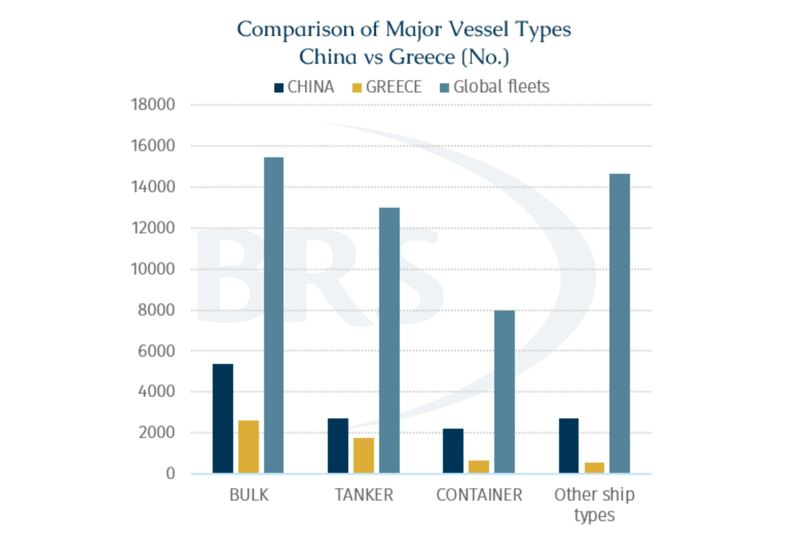
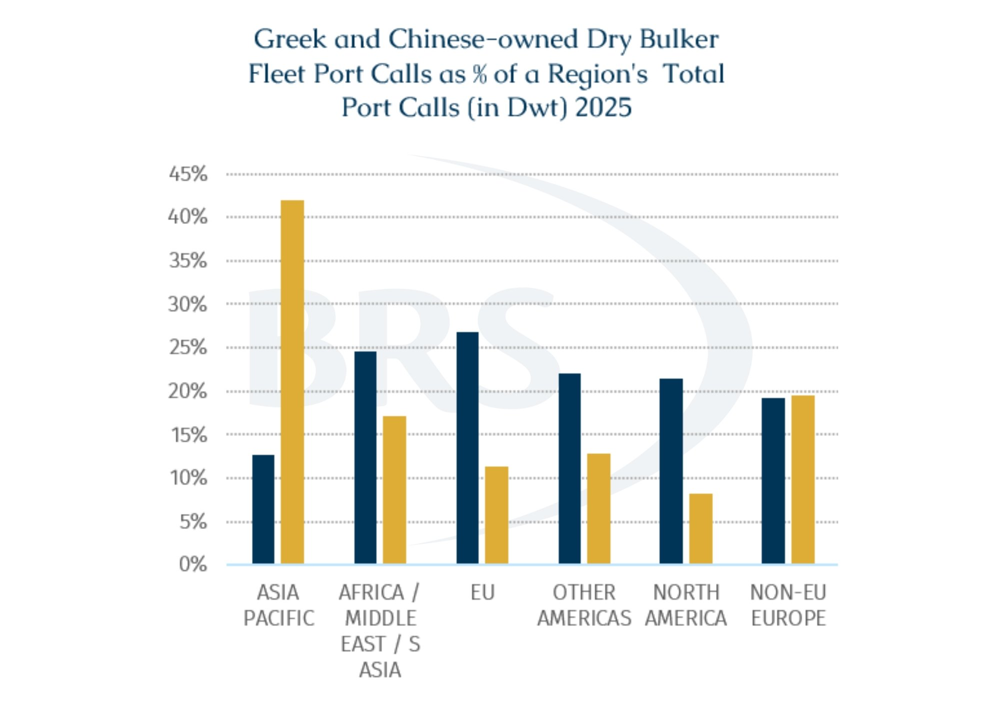

Over the past few years, Chinese-controlled tonnage has continued to increase across major shipping segments, with particularly strong growth in the dry bulk and tanker fleets. In terms of vessel numbers, Chinese-controlled tonnage, where the beneficial shipowner refers to the underlying entity that effectively controls and benefits from a vessel, regardless of its registered ownership, now accounts for around 25% of the global fleet, far exceeding Greece’s share of around 11%. This shift does not necessarily diminish Greece’s established role in global shipping, but it does raise questions on the future outlook for maritime ownership.
Meanwhile, China’s fleet expansion has been driven by trade scale, industrial policy, and state-backed capital. From a scale perspective, the rapid growth of Chinese-controlled tonnage has been supported by the country’s vast trade demand, policy backing, and sustained capital investment from state-owned enterprises. China is the world’s largest seaborne importer of bulk commodities. In 2025, China’s seaborne bulk commodity imports accounted for around 40.5% of total global seaborne bulk trade. At the same time, China remains the world’s largest exporter of manufactured goods, with total merchandise exports reaching around $3.77 trillion, equivalent to roughly 14% of global goods exports.
As a result, China’s fleet expansion is not merely a commercial investment decision. It is also closely linked to the security and control of import supply and export logistics. More importantly, the expansion of Chinese-controlled tonnage is closely aligned with the country’s broader industrial strategy. Since the second half of 2024, COSCO’s “Hundred Ships Plan” has accelerated, aiming to significantly expand the group’s carrying capacity through the construction of around 100 large vessels. According to Union of Greek Shipowners (UGS) data, around 44% of China-controlled tonnage belong to state-owned enterprises, and state-owned companies account for approximately 64% of China’s newbuilding orders. This suggests that the competitiveness of Chinese shipowners is not only supported by large-scale cargo demand and economies of scale, but also by the continued backing of state capital and industrial policy.
However, Greece and China do not share the same fleet model. If the Chinese-controlled fleet is trade-linked and nationally supported, closely tied to the country’s domestic trade demand and national strategic priorities, the Greek fleet is better understood as an international and cross-trading fleet, a commercially driven fleet centered on global third-party transportation and tramp shipping. Greece does not have a large domestic cargo base to support its fleet, yet it has remained one of the world’s leading ship owning nations for decades. This in itself highlights that the Greek fleet operates under a very different commercial model.
According to UGS data, Greece controls around 5,800 vessels, including approximately 2,766 bulk carriers, representing about 22% of the global dry bulk fleet. The capacity of the Greek-owned merchant fleet exceeds 458 mn Dwt, equivalent to around 19.1% of the global fleet. Greek shipping primarily serves the external trade of other nations, more than 98% of this capacity is deployed in third countries.
Compared with China, Greek-controlled tonnage is more evenly distributed across regions, while Chinese-controlled tonnage remains more concentrated in Asia-Pacific and selected emerging market areas.

Greece’s loss of the whole fleet top position should not be interpreted simply as a passive decline. In recent years, the Greek-controlled dry bulker fleet has continued to expand, but growth rate has slowed to 3.2% from 5.4% in 2016. This slowdown does not reflect a lack of capital among Greek shipowners or a withdrawal from the market. Rather, it reflects a deliberate strategy of selling older vessels in order to rejuvenate the fleet and optimize asset structure.
In 2025, the average age of dry bulk vessels sold by Greek shipowners was around 19 years. Over the past two years, amid elevated secondhand vessel prices, Greek owners have taken the opportunity to dispose of a large number of older vessels that had already recovered their capital cost. Older bulk carriers have been particularly attractive to Asian buyers, with Chinese buyers showing especially strong demand. Last year, around 39% of secondhand bulk carriers sold by Greek owners were acquired by Chinese buyers.
Although China has surpassed Greece as a shipowning nation in terms of scale, China’s role as a shipbuilder is also helping Greek owners renew their fleets. At present, around 55% of the Greek-controlled dry bulk fleet, measured by Dwt, was built at Chinese shipyards. Greek owners currently have around 133 bulk carriers under construction in China, representing 14.7% of Chinese shipyards’ dry bulk orderbook. This makes them the second-largest ordering group after Chinese owners, who account for 41.3%. By contrast, only 19 vessels in the Greek bulk carrier orderbook are being built at non-Chinese yards.
Although Greece ceded the top position in terms of fleet scale in the short term, this does not necessarily imply a corresponding decline in its market influence. According to UGS, the competitive advantage of Greek shipowners within the global shipping system lies more in their deep involvement in the dry bulk and tramp shipping markets. These markets are responsible for transporting key commodities such as energy products, minerals, and grains, forming a core foundation of global trade. They are also highly fragmented, fully competitive, and liquid, with a large number of small and medium-sized shipping companies participating.
In this market structure, scale alone is not the decisive factor. Operational capability, asset allocation, and market flexibility are more important. Greek shipowners have long maintained strong responsiveness and resilience through a highly fragmented but specialized ownership structure, flexible fleet deployment, and the ability to dynamically reallocate tonnage across different regions and cargo flows. This has allowed Greece to continue consolidating its core position in the global bulk commodity transportation system despite cyclical volatility in shipping markets.
Looking ahead, the Greek fleet is expected to continue expanding, but its growth model may no longer be driven simply by the pursuit of additional carrying capacity. The rise of the Chinese fleet reflects the increasing ability of a major trading and manufacturing power to control maritime transport resources. The strength of the Greek fleet, by contrast, still lies in its globalized, commercial, and highly flexible tramp shipping network.
As a result, China’s overtaking of Greece should not be equated with a decline in Greek maritime leadership. More accurately, it marks a shift in the global shipowning landscape from a single scale-based ranking competition toward structural differentiation between different fleet models. China’s advantages lie in its trade base, policy support, and capital scale, while Greece’s strengths remain its global operating experience, asset management capability, and cross-regional market flexibility. The competition between the two is therefore not a simple substitution story, but rather a reflection of the simultaneous rise of two different forces within the global shipping system.